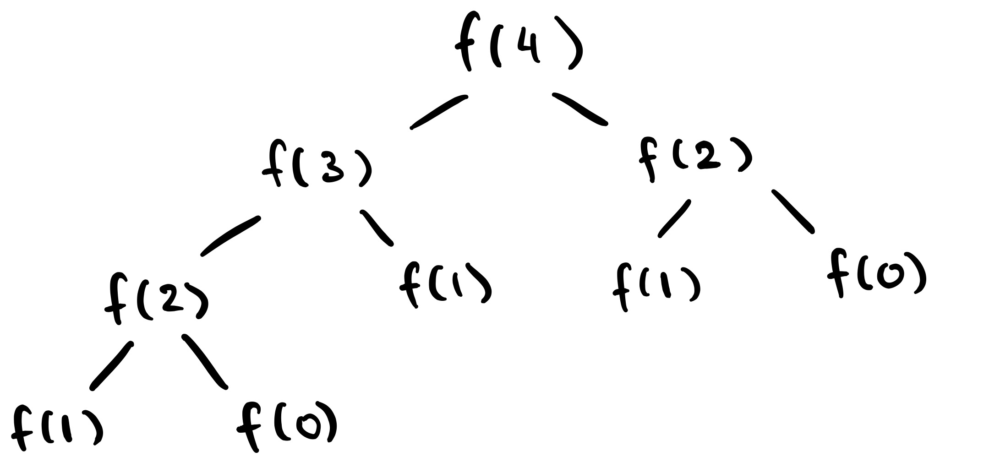

Big O notation is one of the most fundamental concepts to
know for interviewing in Computer Science. It's imperative
that you know this like the back of your hand. It will be relevant for almost every single
technical interview question you encounter.
This is absolutely everything you need to know about Big O Notation.
It can be a challenging concept to grasp at first, but once it *clicks*, it'll come naturally. üòÄ
Introduction: How can we compare algorithms?
Let's start by asking ourselves: what's the best way to compare algorithms?
There are many different ways to sort a list - how do we know which is best?
We need some framework to be able to say that algorithm 1 is "better" than algorithm 2.
First, "better" can mean many things. What do we care about? What do we want to optimize?
Two common answers to this question are readability and efficiency.
Readability is concerned with how clean the code is. Is it well commented?
How easy is it to make a change? Can I read it without wanting to claw my eyes out?
Efficiency is where Big O comes in. How efficient is this code in terms of time (how long it takes to run)
and space (the amount of memory it needs)? We want a basis to compare algorithm efficiency.
What if we use number of lines as a basis?
Algorithm 1 is better than Algorithm 2 because there are less lines of code.
Well, this doesn't measure efficiency very effectively. The same algorithm can
be implemented with drastically different line counts. I can put all my braces on new lines,
does that make the algorithm less efficient? Clearly, this won't work. üëé
Okay, what if we use time to compare instead?
Algorithm 1 is better than Algorithm 2 because it runs in less time.
This is better, but my code can run at different speeds depending on where I run it.
If I run my code on a supercomputer, it'll run much faster than on my laptop.
Actually, my code can take varying times to run on the same machine, depending on
various factors like what processes are currently running. This won't work well either. üëé
Big O notation gives us a method to compare
algorithm efficiency. It asks the question,
What is the worst-case runtime of this algorithm relative to its input size?
To determine the Big O complexity, we don't need to count the number of lines or time how long it takes to
run.
Instead, we just look at the basic steps of the algorithm.
This gives us a machine-independent basis to judge which algorithm is more efficient,
in terms of both time and space. üëç
The formal definition is as follows: if an algorithm has a runtime of
O(f(n))
, then for large enough n, the runtime is at most
c*f(n) for some constant c.
This sounds complicated, but bear with me.
All it says is that for an algorithm to have a time complexity of O(f(n)),
I should be able to pick some constant c and a point
n where c*f(n) will always be greater
than the runtime. A graph is the best way to see this:
In this case, n0 is the point at which
c*f(n) will always greater than our runtime. Since this
point exists, our runtime is O(f(n)).
If this doesn't make sense right now, don't worry. Keep reading and come back to this once you've got the
hang of things.
The Basic Rules of Big O
There are some simple rules to follow when using Big O notation.
Rule #1: Ignore the constants
With Big O, we only care about
growth rate. How does this algorithm scale as the input size
n
gets very large? Well, multiplying by a constant factor doesn't make much of a difference for large numbers,
so it's left out. For example,
$$ O(3n) = O(n)$$
$$ O(\frac{1}{2} \log n) = O(\log n)$$
Note: In practice, constact factors can matter dramatically. For theoretical purposes they
are ignored since we only care about what happens asympotically.
Rule #2: Ignore lower order terms
We're only concerned with asymptotic upper bounds. Asympotically, complexities like
O(n2 +
1)
are equivalent to
O(n2). The term with the greatest growth rate
dominates
the expression. In other words,
$$ O(f(x) + g(x)) = O(max(f(x), g(x)))$$
You can use this general chain of dominating terms when simplifying:
$$O(1) \lt O(\log n) \lt O(n) \lt O(n \log n)$$$$ \lt O(n^2) \lt O(2^n) \lt O(n!)$$
Some examples,
$$O(n^2 + 3n + 10000000000) = O(n^2)$$
$$O(n^{9999} + 50n \log n + 2^n) = O(2^n)$$
Rule #3: Use differing variables for differing inputs
You may be wondering: what if our algorithm depends on the sizes of two different inputs?
In that case, use a different variable for each input, like O(s + t)
or O(n*m).
Note: Don't get hung up on the variable name inside of the O().
By convention, things like arrays use n and m,
whereas strings use s and t.
This is only convention; it doesn't matter what you use as long as it's reasonable.
Rule #4: Addition rule
For addition, the following holds:
$$O(f(x)) + O(g(x)) = O(f(x) + g(x))$$
How can we use this? Let's look at an example:
// Return true if either string contains `c`.
function exists_char(str1, str2, c) {
for (int i = 0; i < str1.length; i++) {
if (str1[i] == c) {
return true;
}
}
for (int i = 0; i < str2.length; i++) {
if (str2[i] == c) {
return true;
}
}
return false;
}
In the worst case, we need to entirely look through both str1 and
str2. Since this happens one after another (the for-loops aren't nested),
we add the complexities to get O(s) + O(t) which is O(s
+ t), where s
and t are the respective lengths.
Rule #5: Multiplication rule
Similarly to addition,
$$O(f(x)) * O(g(x)) = O(f(x) * g(x))$$
This comes into play when we see some sort of nesting.
function nested_strings(str1, str2) {
for (int i = 0; i < str1.length; i++) {
for (int j = 0; j < str2.length; j++) {
console.log("These loops are nested");
}
}
}
Since we're executing the inner loop for every outer loop iteration, we get
a runtime of
O(s*t).
Most Common Big O Complexities
These are the most common runtimes that you'll encounter.
O(1) - Constant Time
An algorithm has a complexity of O(1) if the runtime is independent
of the input size. For
example,
function one_plus_one() {
return 1 + 1;
}
In this case, no matter what I pass to this function, the runtime stays constant. So, we say it has a
complexity of O(1).
O(log n) - Logarithmic Time
An algorithm has a complexity of O(log n) if the runtime is logarithmic to
its input size.
You want to look for when you have some sort of division of work.
Binary search is the most common example here.
Consider this: you have a phone book sorted by last name and are looking John
Doe. Binary search says to open to the middle of the book, and look for
Doe. Let's say you've flipped to the page with the letter M.
Since the phone book is sorted, and D < M, you can rip out the second half
of the phone book, and
repeat your search in the remaining half.
If we start with N elements, then after one step we're left with
N / 2. After another we have N / 4, and so
on.
Since the search space is halved every time, you have a
logarithmic runtime (in this case, with a base of 2).
Note that
the base of the log does not matter with Big O notation. Why? Because the change
of
base
of a logarithm means multiplication by a constant factor. For example,
$$\log_{2}n = (\frac{1}{\log 2}) \log n = c\log n$$
Similar logic applies for
log(nk).
$$\log n^k = k \log n$$
By Rule #1, we don't care about these constant factors, so we just write
O(log
n) without the base.
Careful - this is different from O(logkn).
O(n) - Linear time
An algorithm has a complexity of O(n) if the runtime is linear with respect
to the input size. For
example,
// Return true if x is in nums.
function find(nums, x) {
for (int i = 0; i < nums.length; i++) {
if (nums[i] == x) {
return true;
}
}
return false;
}
Remember, Big O is concerned with the worst case scenario. In the worst case, we need to traverse
through all n of the elements, so this has complexity O(n).
Note: it's technically correct to say that this algorithm runs in
O(n2),
O(n3),
O(2n), or anything larger than
O(n)
. Think of it this way -
we want an upper bound. If I have 10 apples, I can say that 1000 is an upper bound for
how many apples I have. I'd be right, but not very accurate. With Big O, we want the
tightest possible upper bound.
O(n log n) - Linearithmic time
An algorithm has a complexity of O(n log n) if it runs a logarithmic
operation a linear number of times, or vice-versa. Merge sort is a very common example,
among
other sorting algorithms.
In fact,
O(n log n) is the fastest acheivable worst-case runtime for
comparision
based sorting algorithms. Here's
a great proof on this.
O(n2) - Quadratic time
An algorithm has a complexity of O(n2) if the runtime is
quadratic with respect to the input size. For example,
// Return true if there exists a pair that sums to 0.
function find_zero_pair(nums) {
for (int i = 0; i < nums.length - 1; i++) {
for (int j = i + 1; j < nums.length; j++) {
if (nums[i] + nums[j] == 0) {
return true;
}
}
}
return false;
}
This nested for-loop is a very common pattern. How do we know that it's O(n2)? Let's count the number of iterations.
In the first outer loop iteration, the inner loop will run
n - 1 times,
where
n is the length of the array. The second time, it will run
n - 2 times, and so on. We get,
$$(n - 1) + (n - 2) + \dots + 1$$$$= \sum_{i = 1}^{n - 1} i $$$$= \frac{n(n-1)}{2}$$
Which is
O(n2). This is one of the only summation results you
have to know.
O(2n) - Exponential time
We've reached the really bad runtimes. A common example of an algorithm
with an exponential runtime is this recursive implementation to return the nth
fibonacci number.
function fibonacci(n){
if (n <= 1) {
return n;
} else {
return fibonacci(n - 1) + fibonacci(n - 2);
}
}
How can we find the time complexity? Let's draw a tree of the recursive calls.

Each recursive call takes O(1), since both
branches of the if-statement take constant time. We have
O(2n) calls, so the total runtime
is O(2n).
Unlike logarithms, the base of an exponential matters.
There's an exponential difference between 2n
and 3n.
Note: it is often the case that the
recursive complexity is O(bd),
where b is the number of branches in one recursion
and d is the depth of the recursive tree.
But, be careful with functions where the base case and recursive case have different
complexities.
O(n!) - Factorial time
Oof. üò¨ This is almost as bad as it gets. But - sometimes it's unavoidable.
What if you had to write a function to generate all permutations of an array of
n numbers?
Well, there are n! permutations of
n numbers, so any algorithm which
generates them all must be at least O(n!).
Space Complexity
We can also use Big O to analyze the space complexity of an algorithm.
This pertains to how much memory it uses relative to its input size.
It works exactly the same for space as it does for time.
For example, if we need to create an array of size n,
we need O(n) space.
In recursive algorithms, stack calls are also counted in the space complexity.
We need space to store these function calls on the stack. For example, what's the
space complexity for the function below?
function recursive(n){
if (n < 1) {
return 1;
} else {
return 2*recursive(n - 1);
}
}
Is the space complexity O(1) because we don't use any
excess variables? No - we need to consider the function calls on the stack.
Ask yourself: what is the maximum number of simultaneous calls on the stack at once?
For n = 3,
The call stack in the worst case
Each call adds a frame to the stack. Since we have
O(n)
calls, and one frame on the stack for every call, we need
O(n) space.
Just becasue you have n recursive calls
doesn't mean you need O(n) space.
How about the Fibonacci example from earlier?
function fibonacci(n){
if (n <= 1) {
return n;
} else {
return fibonacci(n - 1) + fibonacci(n - 2);
}
}
By counting, we have O(2n) function calls. Does that
mean we need O(2n) space? Not quite.
When a function is called, its frame is added to the stack. When it returns, the
frame is popped off. All of these O(2n)
function calls don't exist on the stack at the same time.
In this case, the most simultaneous calls on the stack
is equal to the depth of the recursive tree. We need to, at most, store
O(n) calls on the stack.
When f(1) finishes, it
will pop off the stack, and f(0) will get pushed on.
There is almost always a space-time tradeoff in algorithm design.
We can trade space for time by storing things we've seen before. For example,
your browser cache stores images and other content from websites you visit so
that it won't have to reload them next time.
Alternatively,
you can trade time for space by clearing your cache. Websites will load slower,
but you'll free up the cache space.
Best and Average Case
So far we've only talked about worst case scenarios. How about best and average case?
In theory (and most programming interviews), we typically care most about worst case, but in practice, best
and average
case may be more suitable.
Worst case can also be misleading sometimes.
function weird(n){
// Get a random number between [1, 99999999]
var x = random_number(1, 99999999);
if (x == 1) {
// O(n!)
} else {
// O(n)
}
}
This is an extreme example, but you get the point. In practice, we should
evaluate the tradeoffs and make reasonable decisions.
Big O is worst case. We call the best case Big Omega (Ω).
Big Theta (Θ) is the average.
You likely won't be asked about these in an interview, but they're good to be
aware about.